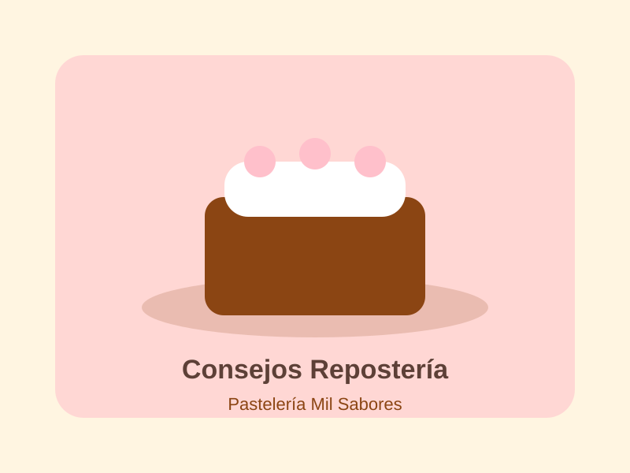

Consejos para decorar tortas
Una torta personalizada puede transformar una celebración. Elegir un mensaje breve, combinar la decoración con la ocasión y definir con anticipación el estilo ayuda a obtener un resultado más claro y especial.
En nuestra tienda, las tortas permiten añadir un mensaje especial desde la página de detalle del producto.
Volver al blog